KLASYCYZM
- zasada melodii i akompaniamentu
- porządek, umiar, prostota i harmonia
- stosowanie budowy okresowej w utrworach
KLASYCY WIEDEŃSCY
-

Wolfgang Amadeus
MOZART
-
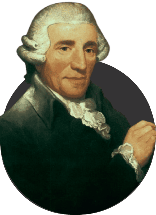
Joseph
HAYDN
-

Ludwig van
BEETHOVEN
ROMANTYZM
- programowość utworów
- fascynacja historią narodową oraz folklorem
- subiektywizm, indywidualizm twórców
PRZEDSTAWICIELE SZKÓŁ NARODOWYCH
-

Richard
WAGNER
-
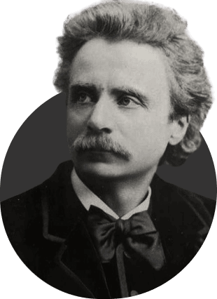
Edvard
GRIEG
-
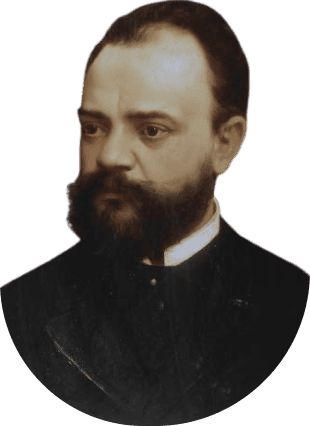
Antonín
DVOŘÁK
-
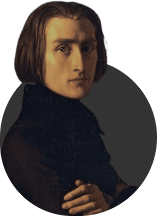
Ferenc
LISZT
-
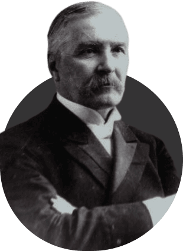
Mykola
LYSENKO
Żelazowa Wola – rodzinne miasto Fryderyka Chopina
WIELKI PIANISTA -
jest nie tylko jednym z najwybitniejszych kompozytorów epoki romantysmu, ale też jednym z najważniejszych polskich kompozytorów w historii. Utwory Chopina do dziasiaj są uznawane na całym świecie
DZIECIŃSTWO
Urodził się 1 marca 1810 roku w Żelazowej Woli koło Sochaczewa, w samym sercu ziemi mazowieckiej. Na chrzcie nadano mu imiona Fryderyk Franciczek
Rodzina chopina
-
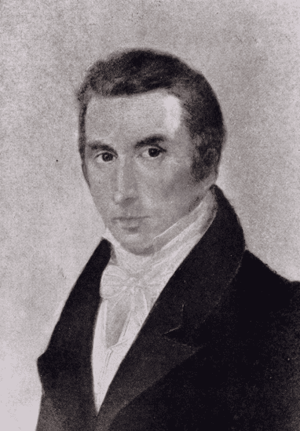
Mikołaj Chopin
-
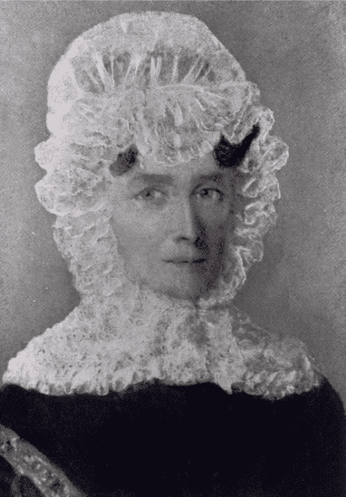
Tekla Justyna Chopin
-
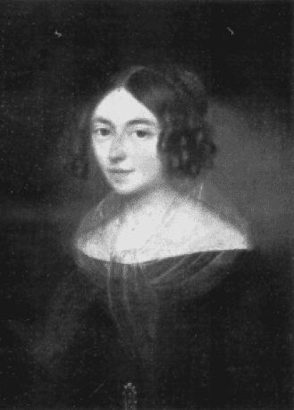
Izabella Barcińska
-
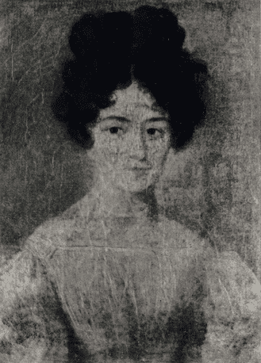
Ludwika Jędrzejewiczowa
-
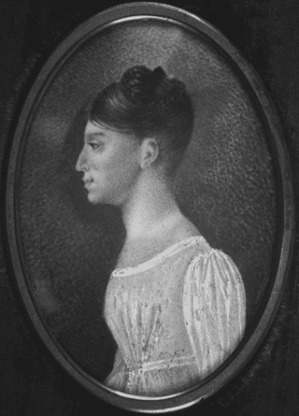
Emilia Chopin
Pierwsze kroki w muzyce
Kiedy chłopak ukończył 7 lat, przydano mu nauczyciela muzyki. Był to Wojciech Żywny - nie najlepszy pedagog , ale znawca i wielbiciel wielkiej muzyki - Bscha, Haydna, Mozarta i wielu innych. Później wdzięczny uczeń dedykował mu jedno ze swoich pierwszych dzieł drukowanych - Poloneza As-dur.
Fryderyk Chopin, Polonez g-moll (1817)
warszawska Szkoła Głównej Muzyki
W roku 1826 nauczycielem Fryderika zostaje Józef Elsner. Młody chłopak zdobyła ogrom wiedzy, zasad i umiętności technicznych. Chopin ma całkowitą swobodę w twórczości i jednocześnie otrzymuje wsparcie pedagoga. Powstały ówczas różne ronda, warjacie, sonaty i koncerty
Fryderyk Chopin – Rondo à la mazur op. 5 (1825 lub 1826)
zwiedzanie europy
- 1828 rok - Berlin
- 1829 rok - Wiedeń
Znowu w Warszawie - koncerty “Fantazja na tematy polskie” oraz “Wielki Polonez z orkiestrą”
powstanie listopadowe
Fryderyk Chopin – Etiuda op. 10 nr 12 “Rewolucyjna” (1831)
miłość chopina
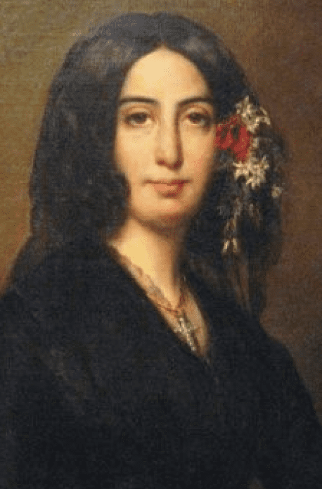Choroba Chopina
W roku 1846 zdrowie kompozytora pogarszało się coraz bardziej, obawiano się o jego życie. Na szczęście, choroba minęła. Rodzina planowała wyjechać do Włoch w celach zdrowotnych, ale w końcu to się nie udało 16 listopada (lub 16 lutego) 1848 rok - ostatni koncert w Paryżu
ostatnie chwile życia
“O mój najgorszy, już go nie ma” -
napisała do męża 17 października o godzinie drugiej w nocy Ludwika Jędrzejewiczowa, siostra Chopina
Fryderyk Chopin – Ballada op. 23 (1835-1836)